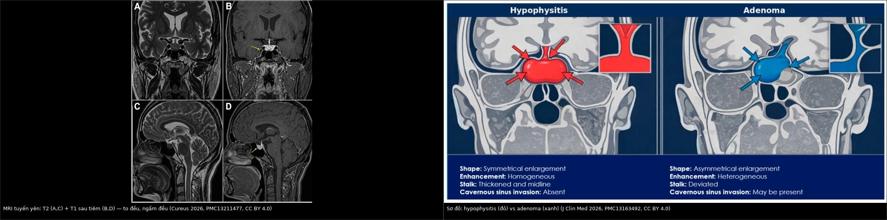
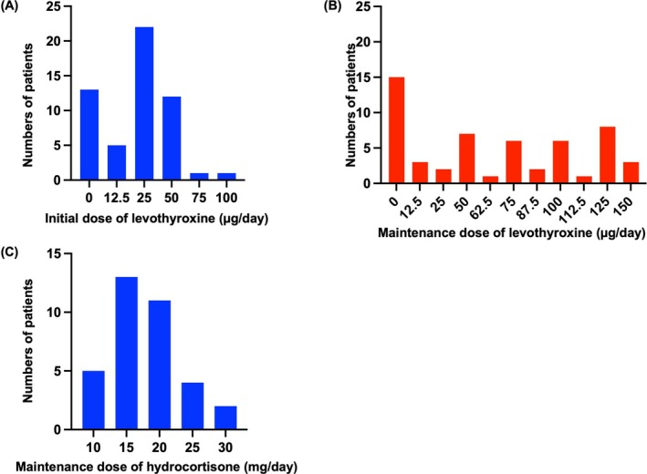
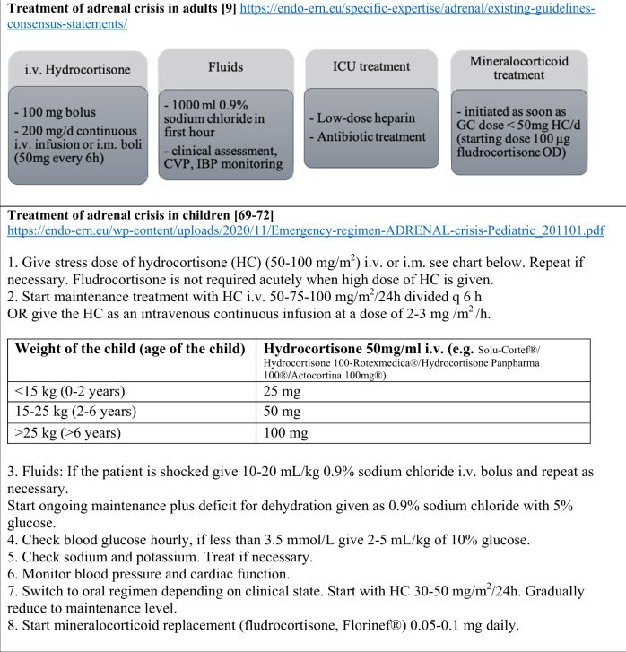
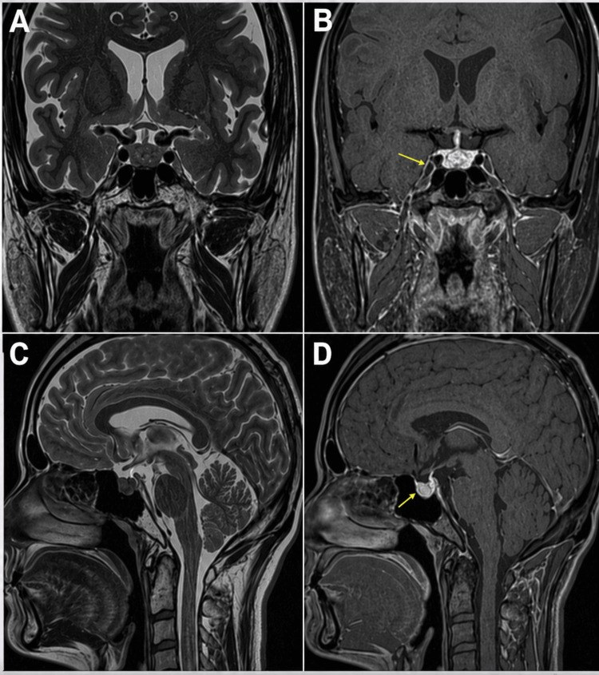
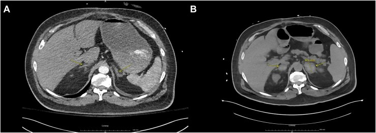

092 — Suy thượng thận & suy tuyến yên do ức chế điểm kiểm soát miễn dịch quanh mổ / Perioperative adrenal insufficiency and hypophysitis after immune checkpoint inhibitors
Tags: pattern:suy-noi-tiet pattern:kinh-mo vung:tuyen-yen vung:thuong-than protocol:MRI-tuyen-yen protocol:CT-bung score:CTCAE
Mức chắc chắn (certainty): tổng hợp y văn (literature synthesis) — 1 nghiên cứu 12 978 bệnh nhân dùng ICI (Kamitani et al., J Clin Endocrinol Metab 2025, PMC12712991), 1 nghiên cứu tiến cứu sàng lọc trước mổ tim–lồng ngực 98 bệnh nhân (Manosroi & Atthakomol, Medicina 2023, PMC9864834), 1 tổng quan về hypophysitis (Iglesias, J Clin Med 2026, PMC13163492), 1 ca nguyên văn MRI (Alasmar et al., Cureus 2026, PMC13211477), 1 ca nguyên văn xuất huyết thượng thận hai bên sau CABG (Yeh et al., AACE Endocrinol Diabetes 2025, PMC12744800), 1 ca sốc quanh mổ (Gültekin et al., Cureus 2025, PMC12392692) và hướng dẫn cấp cứu của Hội Nội tiết châu Âu (Arlt, Endocr Connect 2016, PMC5314805). Chỗ chưa kiểm chứng ghi "chưa rõ".
1. Tổng quan bệnh học – cơ chế hình ảnh
- Vì sao ức chế điểm kiểm soát (immune checkpoint inhibitor — ICI) gây suy nội tiết: kháng thể kháng CTLA-4 hoạt hóa bổ thể tại tuyến yên (phản ứng quá mẫn type II) → viêm tuyến yên (hypophysitis); kháng thể kháng PD-1/PD-L1 thường chỉ gây thiếu ACTH đơn độc với MRI tuyến yên bình thường. Đây là điểm khác biệt lớn nhất giữa hai nhóm thuốc và là lý do MRI âm tính không loại trừ suy thượng thận thứ phát.
- Vì sao thiếu cortisol gây tụt huyết áp kháng vận mạch: cortisol là chất cho phép (permissive) của catecholamine — thiếu cortisol làm giảm biểu hiện thụ thể α-adrenergic ở mạch, giảm co mạch và giảm thể tích tuần hoàn. Vì vậy bệnh nhân không đáp ứng với noradrenaline/adrenaline liều cao cho tới khi bù glucocorticoid. Ca quanh mổ của Gültekin et al. 2025 chính là hình ảnh này: sốc trong mổ bắc cầu chủ–đùi, không đáp ứng vận mạch liều cao, giải quyết trong vòng 1 giờ sau methylprednisolone 75 mg.
- Vì sao hạ Na⁺ mà K⁺ bình thường/giảm (khác suy thượng thận nguyên phát): trong suy thứ phát (thiếu ACTH), aldosterone còn → không giữ K⁺, không toan; cortisol thiếu làm tăng ADH và giảm thanh thải nước tự do → hạ Na⁺. Thiếu aldosterone (nguyên phát) mới có tăng K⁺, nhiễm toan, tăng sắc tố. Ca Gültekin: hạ K⁺ là manh mối chỉ ra suy thứ phát.
- Ngưỡng định lượng phải nhớ (cửa 1 của Argon):
- Tần suất bất thường nội tiết do ICI (12 978 bệnh nhân, Nhật Bản): một tuyến 12,0%, nhiều tuyến 1,4%; phối hợp hay gặp nhất là suy giáp + suy thượng thận 1,3% (Kamitani et al. 2025).
- Trong hypophysitis do ICI: thiếu ACTH 60–80% lúc chẩn đoán; suy giáp trung ương 40–70%; suy sinh dục 40–60% (Iglesias 2026).
- Sàng lọc trước mổ tim–lồng ngực (98 bệnh nhân): 34,7% có suy thượng thận theo test ACTH liều thấp; bù hydrocortisone 100 mg trước mổ + 200 mg/24 giờ cho kết cục tương đương nhóm bình thường, chỉ tăng đường huyết cần insulin (OR 14,15; KTC 95% 1,44–138,60; p = 0,02) (Manosroi & Atthakomol 2023).
- Ngưỡng chẩn đoán dùng trong nghiên cứu trên: cortisol 8 giờ sáng < 3 µg/dL (≈ 83 nmol/L) = suy thượng thận; 3,1–14,9 µg/dL (≈ 86–414 nmol/L) = vùng xám → làm test ACTH liều thấp 5 µg, đỉnh < 15 µg/dL (≈ 414 nmol/L) = suy thượng thận. Suy thượng thận liên quan bệnh nặng (CIRCI): cortisol ngẫu nhiên < 10 µg/dL khi đang tụt huyết áp.
- Tần suất cơn suy thượng thận cấp: 8/100 bệnh nhân–năm ở người đã có suy thượng thận (Dineen et al. 2019, PMC6566489) — nghĩa là nguy cơ luôn hiện diện, không chỉ trong mổ.
- Xuất huyết thượng thận hai bên (BAH) + suy thượng thận: tử vong tới 27,8%, và tới 100% nếu không chẩn đoán (Yeh et al. 2025).
- Vì sao hình ảnh vẫn cần dù chẩn đoán là sinh hóa: MRI tuyến yên trả lời "viêm hay u", CT bụng trả lời "xuất huyết/ di căn/ teo" — hai câu hỏi này đổi thái độ điều trị (corticoid liều cao ± phẫu thuật giải ép so với bù hormone đơn thuần).
2. Mẫu hình + chẩn đoán phân biệt theo vị trí (gamut)
Câu hỏi thực hành: bệnh nhân đã dùng ICI, sắp hoặc vừa mổ (cắt phổi, cắt thực quản, CABG) nay mệt, buồn nôn, hạ Na⁺, tụt HA không đáp ứng vận mạch — suy thượng thận do ICI, do corticoid kéo dài, do xuất huyết thượng thận, hay sốc nhiễm khuẩn?
Theo tầng tổn thương:
- Tuyến yên (thứ phát): hypophysitis do ICI (CTLA-4), thiếu ACTH đơn độc (PD-1/PD-L1), u tuyến yên, apoplexy, Sheehan, IgG4, di căn, sau xạ não — phải loại u/apoplexy trước khi quy cho thuốc.
- Thượng thận (nguyên phát): xuất huyết hai bên (HIT, kháng đông, sốc nhiễm khuẩn, sau CABG), di căn, lao/nấm, lymphoma, bệnh tự miễn teo tuyến, sau cắt thượng thận.
- Do thuốc khác: corticoid kéo dài (ức chế trục HPA — nguyên nhân hay bị bỏ qua nhất ở bệnh nhân ung thư), megestrol, ketoconazole, abiraterone, thuốc ức chế miễn dịch.
- Giả suy thượng thận: sốc nhiễm khuẩn (CIRCI), suy giáp nặng, hội chứng thận hư (mất protein gắn cortisol) — cortisol toàn phần thấp nhưng cortisol tự do bình thường.
Theo hình ảnh tuyến yên:
| Mẫu hình MRI | Nghĩ tới |
|---|---|
| Tuyến yên to đều, ngấm đều, cuống dày, không xâm lấn xoang hang | Hypophysitis (ICI-CTLA-4, lymphocytic, IgG4) |
| Tuyến yên bình thường | Thiếu ACTH đơn độc do PD-1/PD-L1; suy trục do corticoid ngoại sinh |
| Khối không đều, cuống lệch, có thể xâm lấn xoang hang | U tuyến yên (adenoma) |
| T1 sáng trong tuyến | Apoplexy/xuất huyết tuyến yên — cấp cứu |
| Tuyến teo nhỏ | Suy tuyến yên mạn, sau xạ/mổ |
Theo hình ảnh thượng thận trên CT:
| Mẫu hình | Nghĩ tới |
|---|---|
| Hai thượng thận to, không đều, đậm độ hỗn hợp sau mổ/kháng đông | Xuất huyết thượng thận hai bên |
| Khối hai bên, bờ không đều, di căn nơi khác | Di căn (phổi, vú, melanoma) |
| Vôi hóa + teo | Lao/nấm cũ, xuất huyết cũ |
| Tuyến mảnh, teo đều | Suy thượng thận tự miễn mạn |
| Nhân < 10 HU trên CT không cản quang | Adenoma lành (ngưỡng kinh điển — chưa đối chiếu nguồn trong lượt này) |
3. Bảng so sánh phân biệt (ma trận đối chiếu)
| Thực thể (entity) | Hình ảnh / xét nghiệm điển hình | Chốt vào (rule-in) | Chốt loại (rule-out) | Gợi ý xác nhận |
|---|---|---|---|---|
| Hypophysitis do ICI | MRI: to đều, ngấm đều, cuống dày, không xâm lấn xoang hang; đau đầu, hạ Na⁺ | ACTH thấp + cortisol thấp + MRI to đều/cuống dày (hoặc MRI bình thường với PD-1) | Khối không đều + cuống lệch → adenoma, không phải viêm | MRI tuyến yên lát mỏng 2–3 mm trước/sau tiêm; ACTH + cortisol 8h |
| U tuyến yên (adenoma) | Không đều, cuống lệch, có thể xâm lấn xoang hang; ngấm không đồng nhất | Bờ không đều + lệch cuống + khối > 10 mm | To đều, cuống giữa, ngấm đều → hypophysitis | MRI + thị trường + prolactin/IGF-1 |
| Suy thượng thận nguyên phát (Addison, BAH) | CT: thượng thận to/hỗn hợp (xuất huyết) hoặc teo; hạ Na⁺ + tăng K⁺, tăng sắc tố | ACTH cao + cortisol thấp + tăng K⁺ | K⁺ bình thường/giảm + không tăng sắc tố → thứ phát | ACTH, renin, aldosterone; CT bụng |
| Suy thượng thận thứ phát (ICI/ corticoid) | MRI tuyến yên bình thường hoặc to đều; hạ Na⁺, K⁺ bình thường/giảm, không tăng sắc tố | ACTH thấp/không tăng + cortisol thấp + K⁺ bình thường | ACTH tăng → nguyên phát | Cortisol 8h + ACTH; test ACTH liều thấp |
| Sốc nhiễm khuẩn (CIRCI) | Nhiễm khuẩn rõ, lactate cao, CT ổ nhiễm; cortisol có thể thấp | Cortisol ngẫu nhiên < 10 µg/dL khi tụt HA + ổ nhiễm | Cortisol cao, đáp ứng vận mạch tốt → không phải CIRCI | Cấy máu, lactate; cortisol trước khi dùng corticoid |
| Xuất huyết thượng thận hai bên sau mổ | CT: hai tuyến to, đậm độ hỗn hợp, thường có giảm tiểu cầu (HIT) | CT hai tuyến to hỗn hợp + tiểu cầu giảm + hạ Na⁺ | Tuyến bình thường trên CT → tìm nguyên nhân khác | CT bụng không/ có cản quang; HIT-PF4 |

Trái: MRI tuyến yên — T2 coronal/sagittal (A, C) và T1 sau tiêm (B, D): tuyến yên to, ngấm thuốc đều (mũi tên vàng). Phải: sơ đồ đối chiếu — hypophysitis (đỏ): to đối xứng, ngấm đồng nhất, cuống dày và giữa, không xâm lấn xoang hang; adenoma (xanh): to không đối xứng, ngấm không đồng nhất, cuống lệch, có thể xâm lấn xoang hang. Nguồn: PMC13211477 Fig. 1 và PMC13163492 Fig. 3, CC BY 4.0. Ảnh ghép letterbox.Vì sao "bình thường trên MRI" vẫn có thể là suy thượng thận
- Với PD-1/PD-L1, tổn thương là thiếu ACTH chức năng chứ không phải viêm có khối → MRI bình thường ở đa số; chẩn đoán bằng sinh hóa, không bằng hình ảnh (Iglesias 2026).
- Ngược lại, to tuyến yên đơn thuần ở người ung thư có thể là di căn hoặc adenoma tình cờ — đừng tự động gán cho ICI.
4. Protocol chụp + quy trình quyết định quanh mổ
MRI tuyến yên (khi nghi hypophysitis hoặc có triệu chứng thần kinh):
- Lát mỏng 2–3 mm, coronal + sagittal, T1 trước tiêm, T1 sau tiêm (đánh giá ngấm thuốc và cuống), T2 (phân biệt xuất huyết/nang); thêm T1 không mỡ (fat-sat) nếu nghi xuất huyết.
- Đo chiều cao tuyến yên (mm), độ dày cuống, ghi có/không xâm lấn xoang hang, cuống lệch hay giữa.
- Không cản quang gadolinium khi mang thai hoặc suy thận nặng (eGFR < 30) — dùng T2 + T1 không tiêm.
CT bụng (khi nghi xuất huyết/di căn thượng thận):
- CT không cản quang trước (đo HU, so sánh hai bên), sau đó thì tĩnh mạch nếu cần; ghi rõ kích thước và đậm độ hai tuyến.
- Ở bệnh nhân sau CABG/sau mổ lớn có giảm tiểu cầu → nghĩ HIT + BAH, chụp sớm trước khi tụt HA.
Quy trình quanh mổ (bắt buộc trước khi gây mê):
flowchart TD
A[Nguoi benh da dung ICI hoac corticoid keo dai, sap mo] --> B{Co trieu chung: met, buon non, ha Na, tut HA?}
B -->|Co| C[Lay cortisol 8h + ACTH TRUOC khi dung corticoid]
B -->|Khong| D[Van sang loc neu dung corticoid > 3 tuan hoac ICI ket hop]
C --> E{Ha Na hoac tut HA khong ro nguyen nhan?}
E -->|Co| F[Bat dau hydrocortisone ngay, khong cho ket qua]
D --> G[Cortisol 8h: <3 µg/dL = suy; 3,1-14,9 = lam test ACTH lieu thap]
G --> H{Suy thuong than xac dinh?}
H -->|Co| I[Lieu chu phau: 100 mg TMC truoc mo, 200 mg/24h, giam dan 1-3 ngay]
H -->|Khong| J[Tiep tuc ke hoach mo, theo doi HA]
F --> I
I --> K{Da on dinh?}
K -->|Co| L[Ve lieu duy tri 10-20 mg/ngay, xem lai ICI]
K -->|Khong| M[ICU: tim o nhiem, xuat huyet thuong than, thieu aldosterone]
- Liều cấp cứu (Hội Nội tiết châu Âu 2016): hydrocortisone 100 mg tiêm mạch rồi 200 mg/24 giờ truyền liên tục (hoặc 50 mg mỗi 6 giờ); NaCl 0,9% 1000 mL trong giờ đầu; khi liều hydrocortisone xuống < 50 mg/ngày mới thêm fludrocortisone 100 µg/ngày (chỉ cần ở suy nguyên phát).
- Liều duy trì: hydrocortisone 10–20 mg/ngày (thực tế đa số 15–20 mg/ngày, Nishihama et al. 2026, Fig. 3C); nếu tuyến yên to + đau đầu/rối loạn thị trường → prednisolone 0,5–1,0 mg/kg/ngày.

Panel C: liều hydrocortisone duy trì ở 34 bệnh nhân suy thượng thận do irAE — tập trung 15–20 mg/ngày, khớp khuyến cáo 10–20 mg/ngày. Nguồn: Nishihama K et al., Cancer Med 2026, PMC13071169 Fig. 3, CC BY-NC 4.0.
- Thứ tự hormone: hydrocortisone trước, levothyroxine sau 5–7 ngày — bù giáp trước khi bù cortisol có thể gây cơn suy thượng thận cấp (Nishihama et al. 2026).
- ICI có phải ngừng vĩnh viễn? Suy nội tiết do ICI thường kiểm soát được bằng bù hormone; quyết định giữ/ngừng thuộc bác sĩ ung thư theo mức độ (CTCAE) và tình trạng ổn định — không tự ngừng vì "suy thượng thận" khi bệnh nhân đã ổn định với liều thay thế. (Chi tiết bậc thang xử trí irAE: xem 085.)

Nguồn: Nowotny H et al., Endocrine 2021, PMC7929907 Fig. 3, CC BY 4.0. Người lớn: hydrocortisone 100 mg bolus + 200 mg/24h truyền (hoặc 50 mg mỗi 6h), 1000 mL NaCl 0,9% giờ đầu, fludrocortisone 100 µg khi liều GC < 50 mg/ngày.
5. Biến thể bình thường và cạm bẫy
- Biến thể bình thường: tuyến yên to nhẹ ở phụ nữ trẻ/đang mang thai (tăng thể tích sinh lý), tuyến yên "rỗng" một phần, cuống hơi lệch do tư thế — đừng gọi là hypophysitis nếu không có bối cảnh ICI + xét nghiệm.
- Cạm bẫy 1 — lấy máu muộn: nếu đã tiêm corticoid trước khi lấy cortisol/ACTH thì không chẩn đoán được nữa. Nhưng không được chờ kết quả để điều trị — lấy máu rồi tiêm ngay (Hội Nội tiết châu Âu 2016).
- Cạm bẫy 2 — hạ Na⁺ bị quy cho SIADH: hạ Na⁺ + tụt HA + mệt ở người dùng ICI phải loại suy thượng thận trước; điều trị SIADH bằng hạn chế nước ở người suy thượng thận sẽ làm nặng thêm.
- Cạm bẫy 3 — dùng fludrocortisone ở suy thứ phát: aldosterone còn → không cần, và dùng thêm gây tăng huyết áp/hạ K⁺.
- Cạm bẫy 4 — bù giáp trước cortisol: khởi động levothyroxine ở người chưa bù cortisol có thể khởi phát cơn suy thượng thận; luôn cortisol trước.
- Cạm bẫy 5 — "suy thượng thận do ICI thì MRI phải bất thường": với PD-1/PD-L1, MRI bình thường là điển hình; đừng bỏ chẩn đoán vì hình ảnh đẹp.
- Cạm bẫy 6 — quên xuất huyết thượng thận sau mổ tim: bệnh nhân giảm tiểu cầu + đau bụng + hạ Na⁺ sau CABG = HIT → BAH; CT bụng là xét nghiệm chốt, chậm trễ có thể tử vong (tới 100% nếu không chẩn đoán).
6. Tự lượng giá — Blind Quiz
Ca 1 — Bệnh nhân ung thư phổi, đã dùng pembrolizumab, mệt và hạ Na⁺. Xem MRI tuyến yên trước, rồi mở đáp án.

- Gợi ý lâm sàng: mệt, chóng mặt, không đau đầu dữ dội.
- Câu hỏi: Tuyến yên to hay bình thường? Dấu hiệu nào giúp phân biệt viêm với u? Xét nghiệm nào quyết định chẩn đoán?
Bấm để hiện đáp án (findings + chẩn đoán)
- Dấu hiệu: tuyến yên to nhẹ, ngấm thuốc đồng nhất, cuống giữa, không xâm lấn xoang hang (mũi tên vàng ở B, D).
- Chẩn đoán: hypophysitis do ICI — viêm lan đều nên ngấm đều; u tuyến yên sẽ không đều + lệch cuống.
- Xác nhận: cortisol 8 giờ sáng thấp + ACTH không tăng; MRI chỉ hỗ trợ.
- Lưu ý: nếu là PD-1/PD-L1 đơn trị, MRI có thể bình thường mà vẫn thiếu ACTH.
- Nguồn: Cureus 2026, PMC13211477 Fig. 1, CC BY 4.0.
Ca 2 — Nam 56 tuổi, 1 tuần sau CABG, đau bụng, tụt HA, tiểu cầu 154 000 → 39 000/µL, hạ Na⁺. Xem CT bụng.

- Câu hỏi: Thượng thận thay đổi thế nào giữa hai thời điểm? Chẩn đoán? Vì sao K⁺ có thể tăng ở ca này nhưng lại giảm ở ca suy do ICI?
Bấm để hiện đáp án
- Dấu hiệu: (A) lúc nhập viện — hai thượng thận bình thường; (B) đêm tiểu cầu xuống thấp nhất — hai thượng thận to, đậm độ không đồng nhất = xuất huyết thượng thận hai bên.
- Chẩn đoán: suy thượng thận nguyên phát do xuất huyết hai bên trong HIT sau CABG; xác nhận bằng test cosyntropin, điều trị hydrocortisone → bệnh nhân cải thiện.
- Vì sao K⁺ khác nhau: xuất huyết phá hủy toàn bộ vỏ → mất aldosterone → tăng K⁺; suy do ICI là thứ phát (ACTH) → aldosterone còn → K⁺ bình thường/giảm.
- Nguồn: AACE Endocrinol Diabetes 2025, PMC12744800 Fig. 1, CC BY 4.0.
Ca 3 — Bệnh nhân đã dùng corticoid 3 tháng, sắp mổ cắt thùy phổi. Nhìn sơ đồ xử trí, trả lời thứ tự hành động.
- Câu hỏi: Trước khi rạch da cần làm gì? Nếu tụt HA giữa mổ, liều đầu tiên là gì? Khi nào thêm fludrocortisone?
Bấm để hiện đáp án
- Trước mổ: lấy cortisol 8 giờ sáng + ACTH (nếu chưa có), và bù liều chu phẫu nếu nghi suy: hydrocortisone 100 mg tiêm mạch trước mổ, sau đó 200 mg/24 giờ rồi giảm dần 1–3 ngày.
- Nếu tụt HA giữa mổ: 100 mg hydrocortisone tiêm mạch ngay + 1000 mL NaCl 0,9% giờ đầu; không chờ kết quả.
- Fludrocortisone: chỉ khi suy nguyên phát và liều hydrocortisone < 50 mg/ngày (liều 100 µg/ngày).
- Vì sao: bù sớm làm mạch đáp ứng lại catecholamine; chậm trễ là nguyên nhân tử vong có thể tránh.
- Nguồn: PMC7929907 Fig. 3 (CC BY 4.0) + Hội Nội tiết châu Âu 2016 (PMC5314805).
Bài liên quan chéo
- 001 – Tổng quan hệ Ngực
- 085 – Độc tính miễn dịch quanh mổ sau hóa–miễn dịch ung thư phổi
- 043 – Chăm sóc hô hấp quanh mổ & TIS
- 084 – Viêm phổi thở máy
- 091 – Ho ra máu ồ ạt & nút mạch động mạch phế quản
Không dùng để chẩn đoán độc lập khi chưa có người hướng dẫn.